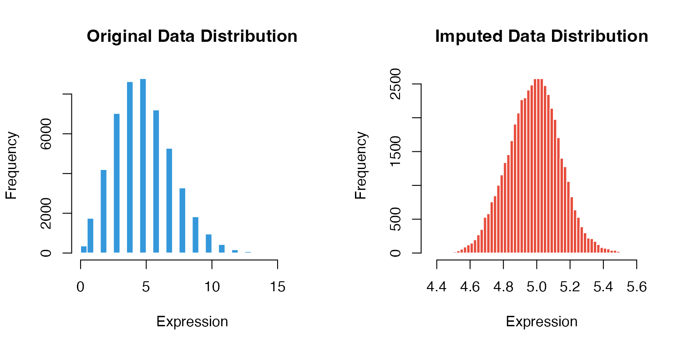
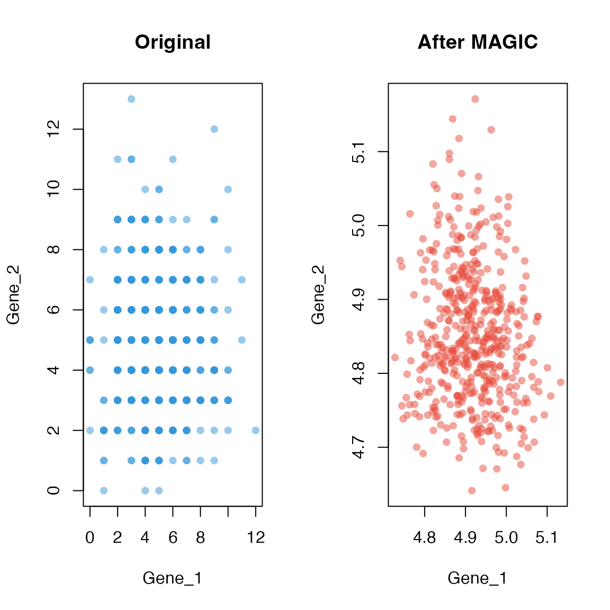

Introduction to MAGICR
Zaoqu Liu
2026-01-26
Source:vignettes/MAGICR-introduction.Rmd
MAGICR-introduction.RmdOverview
MAGICR is a native R implementation of the MAGIC (Markov Affinity-based Graph Imputation of Cells) algorithm for denoising and imputation of single-cell RNA sequencing (scRNA-seq) data.
Single-cell RNA sequencing has revolutionized our understanding of cellular heterogeneity, but technical limitations result in sparse count matrices with prevalent dropout events—where expressed genes appear as zeros due to sampling inefficiency. MAGIC addresses this challenge by leveraging the underlying manifold structure of the data through diffusion geometry.
Installation
# From R-universe (recommended)
install.packages("MAGICR", repos = "https://zaoqu-liu.r-universe.dev")
# From GitHub
remotes::install_github("Zaoqu-Liu/MAGICR")Quick Start
library(MAGICR)
# Load example data
data(magic_testdata)
# Check data dimensions
dim(magic_testdata)
#> [1] 500 100
# Preview the data
magic_testdata[1:5, 1:5]
#> Gene_1 Gene_2 Gene_3 Gene_4 Gene_5
#> Cell_1 8 3 7 2 11
#> Cell_2 9 3 2 9 4
#> Cell_3 4 5 7 1 6
#> Cell_4 7 7 5 8 8
#> Cell_5 6 2 5 4 7Visualizing Results
Before vs After Imputation
par(mfrow = c(1, 2))
# Original data distribution
hist(as.vector(as.matrix(magic_testdata)),
breaks = 50,
main = "Original Data Distribution",
xlab = "Expression",
col = "#3498db",
border = "white")
# Imputed data distribution
hist(as.vector(imputed_data),
breaks = 50,
main = "Imputed Data Distribution",
xlab = "Expression",
col = "#e74c3c",
border = "white")
Gene-Gene Relationships
One of MAGIC’s key benefits is recovering gene-gene relationships that are obscured by dropout noise.
# Select two genes
gene1 <- colnames(magic_testdata)[1]
gene2 <- colnames(magic_testdata)[2]
par(mfrow = c(1, 2))
# Original
plot(magic_testdata[, gene1], magic_testdata[, gene2],
pch = 16, col = adjustcolor("#3498db", 0.5),
xlab = gene1, ylab = gene2,
main = "Original")
# Imputed
plot(imputed_data[, gene1], imputed_data[, gene2],
pch = 16, col = adjustcolor("#e74c3c", 0.5),
xlab = gene1, ylab = gene2,
main = "After MAGIC")
Parameter Tuning
Session Info
sessionInfo()
#> R version 4.4.0 (2024-04-24)
#> Platform: aarch64-apple-darwin20
#> Running under: macOS 15.6.1
#>
#> Matrix products: default
#> BLAS: /Library/Frameworks/R.framework/Versions/4.4-arm64/Resources/lib/libRblas.0.dylib
#> LAPACK: /Library/Frameworks/R.framework/Versions/4.4-arm64/Resources/lib/libRlapack.dylib; LAPACK version 3.12.0
#>
#> locale:
#> [1] C
#>
#> time zone: Asia/Shanghai
#> tzcode source: internal
#>
#> attached base packages:
#> [1] stats graphics grDevices utils datasets methods base
#>
#> other attached packages:
#> [1] MAGICR_1.0.0
#>
#> loaded via a namespace (and not attached):
#> [1] cli_3.6.5 knitr_1.51 rlang_1.1.7 xfun_0.56
#> [5] otel_0.2.0 textshaping_1.0.4 jsonlite_2.0.0 listenv_0.10.0
#> [9] htmltools_0.5.9 ragg_1.5.0 sass_0.4.10 rmarkdown_2.30
#> [13] grid_4.4.0 evaluate_1.0.5 jquerylib_0.1.4 fastmap_1.2.0
#> [17] yaml_2.3.12 lifecycle_1.0.5 compiler_4.4.0 codetools_0.2-20
#> [21] irlba_2.3.5.1 fs_1.6.6 Rcpp_1.1.1 htmlwidgets_1.6.4
#> [25] future_1.69.0 lattice_0.22-7 systemfonts_1.3.1 digest_0.6.39
#> [29] R6_2.6.1 RANN_2.6.2 parallelly_1.46.1 parallel_4.4.0
#> [33] bslib_0.9.0 Matrix_1.7-4 tools_4.4.0 globals_0.18.0
#> [37] pkgdown_2.1.3 cachem_1.1.0 desc_1.4.3